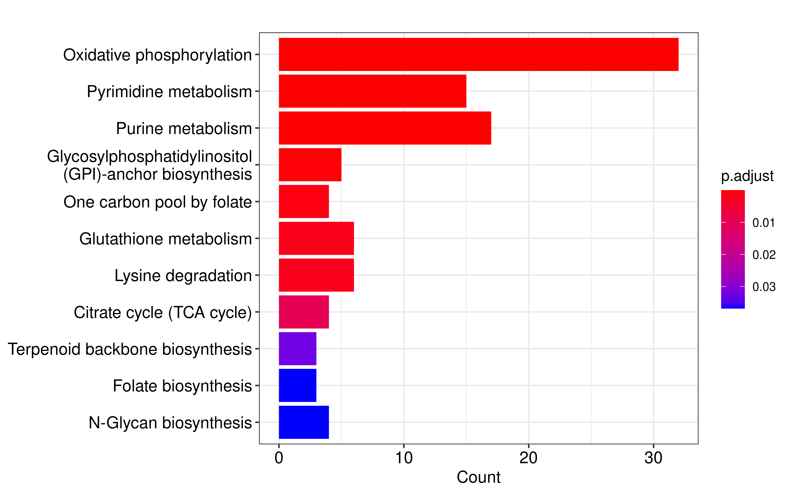

Deep learning reveals the metabolic vulnerability of hypoxic tumor cells and the critical function of FLAD1 mediated tumor hypoxia adaption
Dependencies
library(yardstick)
library(dplyr)
library(ggplot2)
library(ggprism)
library(patchwork)
library(ggpubr)Network analysis
Sample specific GEMs were download in mat format and convert to xml
format by Matlab. Then we applied the R package Met2Graph to extract
enzyme network from GSMs. In this network, enzymes are the nodes
connected by edges represented by metabolites. Two enzymes are connected
if they catalyze two reactions which produce or consume a specific
metabolite. The code for data format convertion can be found in
code/convert_gems.R.
We use Graph2Vec, an algorithm designed to learn vector
representations for whole graphs, to compute the embedding vector for
each sample’s enzyme network. Then we use cosine similarity to calculate
the similarity between pairs of enzyme networks (the code for
calculating graph similarity can be found in
code/graph_sim.ipynb). Based on the Buffa hypoxia score,
samples are divided into hypoxic (score greater than the upper quartile)
and non-hypoxic groups (score less than the lower quartile). We compared
the differences in network similarity between samples with the same
hypoxia status and those with different hypoxia statuses.
sim <- data.table::fread("/home/data/sdb/wt/enzyme_net_sim.csv",data.table = F)
sim$V1 <- NULL
rownames(sim) <- colnames(sim)
hypo_score <- data.table::fread("~/hypoxia_target/data/Pancancer hypoxia scores.txt",
data.table = F)
hypo_score_summ <- hypo_score %>%
group_by(tumour_type) %>%
summarise(up_quan = quantile(Buffa_hypoxia_score_intra_tumour_type)[4],
down_quan = quantile(Buffa_hypoxia_score_intra_tumour_type)[2]) %>%
ungroup()
hypo_score <- hypo_score %>%
mutate(patient_id = gsub("[.]","-",patient_id)) %>%
select(patient_id, tumour_type, Buffa_hypoxia_score_intra_tumour_type) %>%
rename(score = Buffa_hypoxia_score_intra_tumour_type) %>%
left_join(.,hypo_score_summ) %>%
rowwise() %>%
mutate(hypo_type = case_when(
score < down_quan ~ "no-hypo",
score > up_quan ~ "hypo",
TRUE ~ "others"
)) %>% ungroup()
#> Joining with `by = join_by(tumour_type)`
hypo_score <- hypo_score %>% filter(hypo_type != "others")
hypo_samples <- hypo_score$patient_id[which(hypo_score$hypo_type == "hypo")]
no_hypo_samples <- hypo_score$patient_id[which(hypo_score$hypo_type == "no-hypo")]
hypo_idx <- which(substr(colnames(sim),1,12) %in% hypo_samples)
no_hypo_idx <- which(substr(colnames(sim),1,12) %in% no_hypo_samples)
filter_sim <- sim[c(hypo_idx,no_hypo_idx),c(hypo_idx,no_hypo_idx)]
filter_sim$row_sample <- rownames(filter_sim)
need_ids <- paste0(rownames(filter_sim),"_",colnames(filter_sim))
filter_sim <- filter_sim %>%
select(row_sample,everything())
filter_sim <- filter_sim %>%
tidyr::pivot_longer(cols = 2:ncol(filter_sim), names_to = "col_sample",
values_to = "sim")
dt <- data.frame(
ids = c(hypo_samples,no_hypo_samples),
type = c(rep("hypo",length(hypo_samples)),rep("nohypo",length(no_hypo_samples)))
)
filter_sim <- filter_sim %>%
mutate(row_id = substr(row_sample,1,12),
col_id = substr(col_sample,1,12)) %>%
left_join(.,
dt %>% rename(row_id = ids,row_type=type)) %>%
left_join(.,dt %>% rename(col_id = ids,col_type=type))
#> Joining with `by = join_by(row_id)`
#> Joining with `by = join_by(col_id)`
filter_sim <- filter_sim %>%
mutate(comb_type = paste0(row_type,"-",col_type))
cancer_type <- data.frame(
ids = c(unique(filter_sim$row_id),unique(filter_sim$col_id))
) %>% distinct_all()
cancer_type$cancer <- EasyBioinfo::get_cancer_type(cancer_type$ids)
filter_sim <- filter_sim %>%
left_join(.,
cancer_type %>% rename(row_id = ids,row_cancer=cancer)) %>%
left_join(.,cancer_type %>% rename(col_id = ids,col_cancer=cancer))
#> Joining with `by = join_by(row_id)`
#> Joining with `by = join_by(col_id)`
library(igraph)
#>
#> Attaching package: 'igraph'
#>
#> The following objects are masked from 'package:dplyr':
#>
#> as_data_frame, groups, union
#>
#> The following objects are masked from 'package:stats':
#>
#> decompose, spectrum
#>
#> The following object is masked from 'package:base':
#>
#> union
dt <- graph_from_data_frame(filter_sim %>% select(1,2),directed = F)
dt <- simplify(dt)
dt_unique <- as_data_frame(dt) %>%
mutate(ids = paste0(from,"_",to))
dt <- filter_sim %>%
mutate(combid = paste0(row_sample,"_",col_sample)) %>%
filter(combid %in% dt_unique$ids) %>%
filter(row_cancer == col_cancer) %>%
filter(row_id != col_id)
dt <- dt %>%
mutate(type2 = ifelse(col_type != row_type,"Type2","Type1"))
p <- ggboxplot(dt,x="type2",y="sim",xlab = F,
ylab = "Similarity")+
stat_compare_means(label="p.format")
facet(p, facet.by = "row_cancer", nrow = 3)We also calculated metrics to measure the importance of gene nodes in the enzyme network, including degree centrality, which indicates the number of connections a gene node has with every other gene; betweenness centrality, quantifying the number of times a gene node appears on the shortest path between two other nodes; eigenvector centrality which quantifies a node’s influence in the network based on its connections to other high-scoring gene nodes and closeness centrality, which calculates the length of the shortest path between a gene and all other genes in the network. These metrics were calculated by R package igraph:
###计算所有样本网络的节点重要性得分
all_files <- list.files("/home/data/sdb/wt/MetGraph/EnzGraphs/",
pattern = "tsv")
library(doParallel)
library(foreach)
my.cluster <- parallel::makeCluster(
60,
type = "PSOCK"
)
doParallel::registerDoParallel(cl = my.cluster)
res <- foreach(
i = all_files,
.packages = c("igraph","dplyr")
) %dopar% {
tmp <- paste0("/home/data/sdb/wt/MetGraph/EnzGraphs/",i)
sample <- gsub("_enzymes_based_graph.tsv","",i)
dt <- data.table::fread(tmp, data.table = F)
dt <- dt %>% dplyr::select(from,to)
dt_g <- igraph::graph_from_data_frame(dt)
# Compute the degree centrality for our graph G.
degr_cent <- igraph::degree(dt_g, v = V(dt_g), mode = "all", normalized = FALSE)
norm_degr_cent <- igraph::degree(dt_g, v = V(dt_g), mode = "all", normalized = TRUE)
# Compute the eigenvector centrality of our network
eign_cent <- igraph::eigen_centrality(dt_g, directed = TRUE)
eign_cent <- eign_cent$vector
# Compute the closeness centraility
clos_cent <- igraph::closeness(dt_g, normalized = FALSE)
norm_clos_cent <- igraph::closeness(dt_g, normalized = TRUE)
# Compute betweeness centrality
betw_cent <- igraph::betweenness(dt_g, directed = TRUE, normalized = FALSE)
norm_betw_cent <- igraph::betweenness(dt_g, directed = TRUE, normalized = TRUE)
all_centrality <- data.frame(vertex = names(V(dt_g)),
degree = degr_cent,
norm_degree = norm_degr_cent,
eigen = eign_cent,
closeness = clos_cent,
norm_closeness = norm_clos_cent,
betweeness = betw_cent,
norm_betweeness = norm_betw_cent)
all_centrality$sample <- sample
all_centrality
}
parallel::stopCluster(cl = my.cluster)
res <- bind_rows(res)
saveRDS(res, file = "/home/data/sdb/wt/all_centrality.rds")We retrieved the gene-wise vector of centrality measures of each sample sepcific enzyme network and computed the euclidean distance between these vectors of pairwise samples.
####基于（共有）节点重要性分布计算相似性
res <- readRDS("/home/data/sdb/wt/all_centrality.rds")
hypo_score <- data.table::fread("~/hypoxia_target/data/Pancancer hypoxia scores.txt",
data.table = F)
hypo_score_summ <- hypo_score %>%
group_by(tumour_type) %>%
summarise(up_quan = quantile(Buffa_hypoxia_score_intra_tumour_type)[4],
down_quan = quantile(Buffa_hypoxia_score_intra_tumour_type)[2]) %>%
ungroup()
hypo_score <- hypo_score %>%
mutate(patient_id = gsub("[.]","-",patient_id)) %>%
select(patient_id, tumour_type, Buffa_hypoxia_score_intra_tumour_type) %>%
rename(score = Buffa_hypoxia_score_intra_tumour_type) %>%
left_join(.,hypo_score_summ) %>%
rowwise() %>%
mutate(hypo_type = case_when(
score < down_quan ~ "no-hypo",
score > up_quan ~ "hypo",
TRUE ~ "others"
)) %>% ungroup()
hypo_score <- hypo_score %>% filter(hypo_type != "others")
hypo_score <- hypo_score %>% filter(hypo_type != "others")
hypo_samples <- hypo_score$patient_id[which(hypo_score$hypo_type == "hypo")]
no_hypo_samples <- hypo_score$patient_id[which(hypo_score$hypo_type == "no-hypo")]
res <- res %>% filter(substr(sample,1,12) %in% hypo_score$patient_id)
cal_sim <- function(dt, var){
dt_met <- dt %>%
select(vertex,sample,var) %>%
tidyr::pivot_wider(names_from = sample, values_from = var) %>%
as.data.frame()
rownames(dt_met) <- dt_met$vertex
dt_met$vertex <- NULL
dt_met <- t(dt_met)
dis <- dist(dt_met) %>% as.matrix()
return(dis)
}
bet_dis <- cal_sim(dt = res, var = "norm_betweeness")
clo_dis <- cal_sim(dt = res, var = "norm_closeness")
eig_dis <- cal_sim(dt = res, var = "eigen")
deg_dis <- cal_sim(dt = res, var = "norm_degree")
sim_res <- list(bet_dis = bet_dis, clo_dis = clo_dis,
eig_dis = eig_dis, deg_dis = deg_dis)
saveRDS(sim_res, file = "/home/data/sdb/wt/met_net_dist.rds")The the differences in this network distance between samples with the same hypoxia status and those with different hypoxia statuses were calculated.
rm(list = ls())
gc()
#> used (Mb) gc trigger (Mb) max used (Mb)
#> Ncells 8911763 476.0 24229170 1294.0 21150860 1129.6
#> Vcells 23520092 179.5 162669053 1241.1 203303115 1551.1
hypo_score <- data.table::fread("~/hypoxia_target/data/Pancancer hypoxia scores.txt",
data.table = F)
hypo_score_summ <- hypo_score %>%
group_by(tumour_type) %>%
summarise(up_quan = quantile(Buffa_hypoxia_score_intra_tumour_type)[4],
down_quan = quantile(Buffa_hypoxia_score_intra_tumour_type)[2]) %>%
ungroup()
hypo_score <- hypo_score %>%
mutate(patient_id = gsub("[.]","-",patient_id)) %>%
select(patient_id, tumour_type, Buffa_hypoxia_score_intra_tumour_type) %>%
rename(score = Buffa_hypoxia_score_intra_tumour_type) %>%
left_join(.,hypo_score_summ) %>%
rowwise() %>%
mutate(hypo_type = case_when(
score < down_quan ~ "no-hypo",
score > up_quan ~ "hypo",
TRUE ~ "others"
)) %>% ungroup()
#> Joining with `by = join_by(tumour_type)`
hypo_score <- hypo_score %>% filter(hypo_type != "others")
hypo_score <- hypo_score %>% filter(hypo_type != "others")
hypo_samples <- hypo_score$patient_id[which(hypo_score$hypo_type == "hypo")]
no_hypo_samples <- hypo_score$patient_id[which(hypo_score$hypo_type == "no-hypo")]
####
sim_res <- readRDS("/home/data/sdb/wt/met_net_dist.rds")
bet_dis <- sim_res$bet_dis
clo_dis <- sim_res$clo_dis
eig_dis <- sim_res$eig_dis
deg_dis <- sim_res$deg_dis
get_sim <- function(sim_dt,hypo,nohypo){
sim_dt <- as.data.frame(sim_dt)
sim_dt$row_sample <- rownames(sim_dt)
sim_dt <- sim_dt %>%
select(row_sample,everything())
sim_dt <- sim_dt %>%
tidyr::pivot_longer(cols = 2:ncol(sim_dt), names_to = "col_sample",
values_to = "sim")
dt <- data.frame(
ids = c(hypo,nohypo),
type = c(rep("hypo",length(hypo)),rep("nohypo",length(nohypo)))
)
sim_dt <- sim_dt %>%
mutate(row_id = substr(row_sample,1,12),
col_id = substr(col_sample,1,12)) %>%
left_join(.,
dt %>% rename(row_id = ids,row_type=type)) %>%
left_join(.,dt %>% rename(col_id = ids,col_type=type))
cancer_type <- data.frame(
ids = c(unique(sim_dt$row_id),unique(sim_dt$col_id))
) %>% distinct_all()
cancer_type$cancer <- EasyBioinfo::get_cancer_type(cancer_type$ids)
sim_dt <- sim_dt %>%
left_join(.,
cancer_type %>% rename(row_id = ids,row_cancer=cancer)) %>%
left_join(.,cancer_type %>% rename(col_id = ids,col_cancer=cancer))
dt <- graph_from_data_frame(sim_dt %>% select(1,2),directed = F)
dt <- simplify(dt)
dt_unique <- as_data_frame(dt) %>% mutate(ids = paste0(from,"_",to))
dt <- sim_dt %>%
mutate(combid = paste0(row_sample,"_",col_sample)) %>%
filter(combid %in% dt_unique$ids) %>%
filter(row_cancer == col_cancer) %>%
filter(row_id != col_id)
dt <- dt %>%
mutate(type2 = ifelse(col_type != row_type,"Type2","Type1"))
return(dt)
}
bet_dt <- get_sim(bet_dis, hypo_samples, no_hypo_samples)
#> Joining with `by = join_by(row_id)`
#> Joining with `by = join_by(col_id)`
#> Joining with `by = join_by(row_id)`
#> Joining with `by = join_by(col_id)`
clo_dt <- get_sim(clo_dis, hypo_samples, no_hypo_samples)
#> Joining with `by = join_by(row_id)`
#> Joining with `by = join_by(col_id)`
#> Joining with `by = join_by(row_id)`
#> Joining with `by = join_by(col_id)`
eig_dt <- get_sim(eig_dis, hypo_samples, no_hypo_samples)
#> Joining with `by = join_by(row_id)`
#> Joining with `by = join_by(col_id)`
#> Joining with `by = join_by(row_id)`
#> Joining with `by = join_by(col_id)`
deg_dt <- get_sim(deg_dis, hypo_samples, no_hypo_samples)
#> Joining with `by = join_by(row_id)`
#> Joining with `by = join_by(col_id)`
#> Joining with `by = join_by(row_id)`
#> Joining with `by = join_by(col_id)`
p <- ggboxplot(bet_dt,x="type2",y="sim",xlab = F,
ylab = "Distance", title = "Betweeness")+
stat_compare_means(label="p.format")
facet(p, facet.by = "row_cancer", nrow = 3)
p <- ggboxplot(clo_dt,x="type2",y="sim",xlab = F,
ylab = "Distance", title = "Closeness")+
stat_compare_means(label="p.format")
facet(p, facet.by = "row_cancer", nrow = 3)
p <- ggboxplot(eig_dt,x="type2",y="sim",xlab = F,
ylab = "Distance", title = "Eigenvector")+
stat_compare_means(label="p.format")
facet(p, facet.by = "row_cancer", nrow = 3)
p <- ggboxplot(deg_dt,x="type2",y="sim",xlab = F,
ylab = "Distance", title = "Degree")+
stat_compare_means(label="p.format")
facet(p, facet.by = "row_cancer", nrow = 3)For each gene, we calculated the difference in the previously mentioned centrality metrics between hypoxic and non-hypoxic tumors.
res <- readRDS("/home/data/sdb/wt/all_centrality.rds")
hypo_score <- data.table::fread("data/Pancancer hypoxia scores.txt",data.table = F)
hypo_score_summ <- hypo_score %>%
group_by(tumour_type) %>%
summarise(up_quan = quantile(Buffa_hypoxia_score_intra_tumour_type)[4],
down_quan = quantile(Buffa_hypoxia_score_intra_tumour_type)[2]) %>%
ungroup()
hypo_score <- hypo_score %>%
mutate(patient_id = gsub("[.]","-",patient_id)) %>%
select(patient_id, tumour_type, Buffa_hypoxia_score_intra_tumour_type) %>%
rename(score = Buffa_hypoxia_score_intra_tumour_type) %>%
left_join(.,hypo_score_summ) %>%
rowwise() %>%
mutate(hypo_type = case_when(
score < down_quan ~ "no-hypo",
score > up_quan ~ "hypo",
TRUE ~ "others"
)) %>% ungroup()
hypo_score <- hypo_score %>% filter(hypo_type != "others")
res <- res %>%
filter(substr(sample,1,12) %in% hypo_score$patient_id)
res <- res %>%
mutate(patient_id = substr(sample, 1, 12)) %>%
left_join(.,
hypo_score %>% select(patient_id,hypo_type))
gene_summ <- res %>% group_by(vertex) %>%
summarise(counts = length(unique(hypo_type))) %>% ungroup() %>%
filter(counts > 1)
res <- res %>%
filter(vertex %in% gene_summ$vertex)
##
all_genes <- unique(res$vertex)
diff_res <- vector("list",length(all_genes))
for (i in 1:length(diff_res)){
dt <- res %>% filter(vertex == all_genes[i])
metrics <- colnames(dt)[2:8]
dt_res <- data.frame(
metrics = metrics,
p_value = NA,
diff = NA
)
for (j in 1:nrow(dt_res)){
tmp <- dt %>% select(dt_res$metrics[j], hypo_type) %>% na.omit()
if (nrow(tmp) < 2){
dt_res$p_value[j] <- NA
dt_res$diff[j] <- NA
}else{
dt_tmp <- wilcox.test(get(dt_res$metrics[j]) ~ hypo_type, data = dt)
dt_res$p_value[j] <- dt_tmp$p.value
dt_res$diff[j] <- median(dt[,dt_res$metrics[j]][which(dt$hypo_type == "hypo")],na.rm = T) - median(dt[,dt_res$metrics[j]][which(dt$hypo_type == "no-hypo")],na.rm = T)
}
}
dt_res$padj <- p.adjust(dt_res$p_value, method = "fdr")
dt_res$gene <- all_genes[i]
diff_res[[i]] <- dt_res
message("Complete ",i,"\n")
}
diff_res <- bind_rows(diff_res)
saveRDS(diff_res, file = "~/hypoxia_target/data/hypo_gene_net_diff.rds")We defined a gene as having a significant difference if it had an FDR value less than 0.05 (Wilcoxon rank-sum test) and the median of the centrality metric in hypoxic tumor samples was greater than in non-hypoxic tumor samples. We filtered for genes with at least one significantly up regulated centrality metric in hypoxic state and used these genes to perform over representation enrichment analysis of metabolic pathways.
rm(list = ls())
gc()
#> used (Mb) gc trigger (Mb) max used (Mb)
#> Ncells 8913634 476.1 24229170 1294.0 24229170 1294.0
#> Vcells 25391465 193.8 126067738 961.9 203303115 1551.1
diff_res <- readRDS("~/hypoxia_target/data/hypo_gene_net_diff.rds")
diff_res_sig <- diff_res %>%
filter(metrics %in% c("norm_betweeness","norm_closeness","eigen","norm_degree")) %>%
group_by(gene) %>%
summarise(sig_counts = sum(diff > 0 & padj < 0.05)) %>%
ungroup() %>% filter(sig_counts >= 1) ##只要有一个显著
sig_genes <- unique(diff_res_sig$gene)
trans <- genekitr::transId(sig_genes,"symbol")
#>
#> Some ID occurs one-to-many match, like "ENSG00000137843, ENSG00000140521, ENSG00000140650"...
#> 99.39% genes are mapped to symbol
trans <- trans[!duplicated(trans$input_id),]
diff_res_sig <- inner_join(
diff_res_sig,
trans %>% rename(gene = input_id)
)
#> Joining with `by = join_by(gene)`
kegg <- readRDS("~/meta_target/data/kegg_all_pathway.rds")
kegg <- kegg %>%
select(pathway,genes)
colnames(kegg) <- c("gs_name","input_id")
enz_id <- genekitr::transId(unique(kegg$input_id), transTo = "entrez")
#> Some ID occurs one-to-many match, like "A2M, AAAS, ABCB11"...
#> 99.81% genes are mapped to entrezid
kegg <- left_join(kegg,enz_id)
#> Joining with `by = join_by(input_id)`
#> Warning in left_join(kegg, enz_id): Detected an unexpected many-to-many relationship between `x` and `y`.
#> ℹ Row 1 of `x` matches multiple rows in `y`.
#> ℹ Row 51 of `y` matches multiple rows in `x`.
#> ℹ If a many-to-many relationship is expected, set `relationship =
#> "many-to-many"` to silence this warning.
kegg <- kegg %>%
select(gs_name,entrezid) %>% rename(entrez_gene = entrezid)
enz_id <- genekitr::transId(unique(diff_res_sig$symbol), transTo = "entrez")
#> Some ID occurs one-to-many match, like "ABL1, ACAT2, ADA2"...
#> 100% genes are mapped to entrezid
em <- clusterProfiler::enricher(enz_id$entrezid, TERM2GENE=kegg,
pvalueCutoff = 1, qvalueCutoff =1) ##use all gene as background
em_res <- em %>% as.data.frame()
kegg <- readRDS("~/meta_target/data/kegg_all_pathway.rds")
kegg <- kegg %>%
filter(grepl("Metabolism",class) | grepl("metabolism",pathway)) %>%
mutate(pathway = gsub(" \\- Homo sapiens \\(human\\)","",pathway))
em_res <- em_res %>%
mutate(pathway = gsub(" -.+","",ID)) %>%
filter(pathway %in% kegg$pathway)
library(enrichplot)
#>
#> Attaching package: 'enrichplot'
#> The following object is masked from 'package:ggpubr':
#>
#> color_palette
library(ggplot2)
em <- filter(em, ID %in% em_res$ID)
em@result$Description <- gsub(" -.+","",em@result$Description)
barplot(em, showCategory=15) +
scale_y_discrete(labels=function(x) stringr::str_wrap(x, width=40))
#> Scale for y is already present.
#> Adding another scale for y, which will replace the existing scale.In silico perturbation
The idea is to use the activity of cell death-related gene sets to divide cells into dying cells and non-dying cells based on single-cell data, and then fine-tune the GeneFormer, which is a foundation transformer model pretrained on a large-scale corpus of ~30 million single cell transcriptomes to enable context-aware predictions in settings with limited data in network biology, to predict cell dying state. We then determined the genes whose in silico deletion in hypoxic cells or non-hypoxic cells from non-dying cell state significantly shifted the fine- tuned Geneformer cell embeddings towards the dying cell states:

The raw expression counts matrix for lung cancer single-cell data was downloaded from the corresponding study and processed using the R package Seurat. To only retain high-quality data, we removed all cells that have fewer than 250 genes with mapped reads and contain more than 15% of mitochondrial specific reads. Then, we used TCfinder to predict cancer cells and retained only the cancer cells for downstream analysis.
library(Seurat)
lung <- readRDS("/home/data/sdb/wt/lung_cancer/RNA_rawcounts_matrix.rds")
###remove cell with high MT
scRNA_obj <- CreateSeuratObject(counts=lung)
scRNA_obj[["percent_mt"]] <- PercentageFeatureSet(scRNA_obj,
pattern = "^Mt\\.|^MT\\.|^mt\\.|^Mt-|^MT-|^mt-")
scRNA_obj <- subset(scRNA_obj,
subset = nFeature_RNA > 250 & percent_mt < 15)
##cancer cell pre
lung <- GetAssayData(scRNA_obj, assay="RNA", slot = "counts")
ps <- TCfinder::pathway_score(expr_data = lung,
normalized = FALSE)
rownames(ps) <- colnames(lung)
res <- callr::r(func = function(conda_env, ps){
reticulate::use_python(paste0(conda_env,"/bin/python"))
predict_result <- TCfinder::predict_cell(path_score = ps)
return(predict_result)
},args = list(conda_env = "/home/wt/miniconda3/envs/tcfinder/",
ps = ps))
########
tumor_cells <- res$barcode[which(res$cell_type == "tumor")]
tumor <- lung[,tumor_cells]
saveRDS(tumor,file = "/home/data/sdb/wt/lung_cancer/lung_tumor_cell.rds")
###test
exp <- ReadMtx(
mtx = "/home/data/sdc/wt/single_cell/raw_counts/cell_research_2020/lung/LC_counts/matrix.mtx",
features = "/home/data/sdc/wt/single_cell/raw_counts/cell_research_2020/lung/LC_counts/genes.tsv",
cells = "/home/data/sdc/wt/single_cell/raw_counts/cell_research_2020/lung/LC_counts/barcodes.tsv"
)
###remove cell with high MT
scRNA_obj <- CreateSeuratObject(counts=exp)
scRNA_obj[["percent_mt"]] <- PercentageFeatureSet(scRNA_obj,
pattern = "^Mt\\.|^MT\\.|^mt\\.|^Mt-|^MT-|^mt-")
scRNA_obj <- subset(scRNA_obj,
subset = nFeature_RNA > 250 & percent_mt < 15)
###find cancer cell
lung <- GetAssayData(scRNA_obj, assay="RNA", slot = "counts")
ps <- TCfinder::pathway_score(expr_data = exp,
normalized = FALSE)
rownames(ps) <- colnames(exp)
res <- callr::r(func = function(conda_env, ps){
reticulate::use_python(paste0(conda_env,"/bin/python"))
predict_result <- TCfinder::predict_cell(path_score = ps)
return(predict_result)
},args = list(conda_env = "/home/wt/miniconda3/envs/tcfinder/",
ps = ps))
tumor_cells <- res$barcode[which(res$cell_type == "tumor")]
tumor <- exp[,tumor_cells]
saveRDS(tumor,file = "/home/data/sdb/wt/lung_cancer/lung_tumor_cell_test.rds")AUCell was used to calculate activity score of hypoxia gene set and cell death related gene set for each cell. Gaussian mixture model (GMM) was used to assign cells into high- and low-score group based on cells’ activity scores.
library(AUCell)
lung_tumor <- readRDS("/home/data/sdb/wt/lung_cancer/lung_tumor_cell.rds")
hypo_pathway <- fgsea::gmtPathways("~/CHPF/exmaple/Hypoxia_geneset.gmt")
all_hypo_genes <- hypo_pathway %>% unlist() %>% unname()
all_hypo_genes <- list(
hypo_sig = all_hypo_genes
)
cells_AUC <- AUCell_run(lung_tumor, all_hypo_genes)
cells_assignment <- AUCell_exploreThresholds(cells_AUC,
plotHist=TRUE, assign=TRUE)
auc_score <- getAUC(cells_AUC) %>% t() %>% as.data.frame()
###
#GMM clustering
fit_GMM <- Mclust(auc_score[,1], G = 2)
Cluster <- list(fit_GMM["classification"])
auc_score$cell <- rownames(auc_score)
auc_score$cluster <- Cluster[[1]][[1]]
saveRDS(auc_score, file = "~/hypoxia_target/data/auc_hypo_cluster.rds")
###death
lung_tumor <- readRDS("/home/data/sdb/wt/lung_cancer/lung_tumor_cell.rds")
pcd_pathway <- fgsea::gmtPathways("data/pcd_pathway.gmt")
all_pcd_genes <- pcd_pathway %>% unlist() %>% unname()
all_pcd_genes <- list(
pcd_sig = all_pcd_genes
)
cells_AUC <- AUCell_run(lung_tumor, all_pcd_genes)
cells_assignment <- AUCell_exploreThresholds(cells_AUC,
plotHist=TRUE, assign=TRUE)
auc_score <- getAUC(cells_AUC) %>% t() %>% as.data.frame()
#GMM clustering
fit_GMM <- Mclust(auc_score[,1], G = 2)
Cluster <- list(fit_GMM["classification"])
auc_score$cell <- rownames(auc_score)
auc_score$cluster <- Cluster[[1]][[1]]
saveRDS(auc_score, file = "~/hypoxia_target/data/auc_pcd_cluster.rds")For GeneFormer fine-tuning, the data was saved as loom
format:
lung_tumor <- readRDS("/home/data/sdb/wt/lung_cancer/lung_tumor_cell.rds")
###id 转化
id <- rownames(lung_tumor)
ems_id <- genekitr::transId(id, transTo = "ens")
#> Some ID occurs one-to-many match, like "A2M, A2MP1, AAAS"...
#> 44.48% genes are mapped to ensembl
ems_id <- ems_id[!duplicated(ems_id$input_id),]
ems_id <- ems_id[!duplicated(ems_id$ensembl),]
lung_tumor <- lung_tumor[ems_id$input_id,]
rownames(lung_tumor) <- ems_id$ensembl
auc_pcd_cluster <- readRDS("~/hypoxia_target/data/auc_pcd_cluster.rds")
auc_hypo_cluster <- readRDS("~/hypoxia_target/data/auc_hypo_cluster.rds")
library(ggpubr)
ggboxplot(auc_pcd_cluster,x="cluster",y="pcd_sig")ggboxplot(auc_hypo_cluster,x="cluster",y="hypo_sig")The data from K.H. et al was used as training data, and 30% of the training data was applied to monitor training process and tune hyper-parameters.
auc_pcd_cluster <- auc_pcd_cluster %>%
mutate(pcd_type = ifelse(cluster == 2, "pcd","no_pcd")) %>%
select(cell, pcd_type)
auc_hypo_cluster <- auc_hypo_cluster %>%
mutate(hypo_type = ifelse(cluster == 2, "hypo","no_hypo")) %>%
select(cell, hypo_type)
library(Seurat,lib.loc = "~/seuratV4/")
meta <- data.frame(
cell = colnames(lung_tumor)
) %>% inner_join(.,auc_pcd_cluster) %>%
inner_join(.,auc_hypo_cluster)
all_pcd_obj <- CreateSeuratObject(counts = lung_tumor)
meta1 <- all_pcd_obj@meta.data
meta1$orig.ident <- rownames(meta1)
meta1 <- left_join(
meta1, meta %>% rename(orig.ident = cell)
) %>% rename(cell_state_hypo = hypo_type,
cell_state_pcd = pcd_type) %>% as.data.frame()
rownames(meta1) <- meta1$orig.ident
all_pcd_obj@meta.data <- meta1
###抽样训练集和测试集
set.seed(202403211)
pcd_idx <- rep("Test",ncol(all_pcd_obj))
pcd_idx[sample(1:length(pcd_idx),length(pcd_idx)*0.7,replace = FALSE)] <- "Train"
all_pcd_obj$train_test <- pcd_idx
library(SeuratDisk)
SaveLoom(all_pcd_obj,
filename = "/home/data/sdb/wt/pcd_obj.loom",
gene_col_name = "ensembl_id",
overwrite = TRUE)
library(loomR)
lfile <- loomR::connect(filename = "/home/data/sdb/wt/pcd_obj.loom",
mode = "r+",skip.validate = T)
lfile$add.col.attribute(list(n_counts = lfile$col.attrs$nCount_RNA[]),
overwrite = TRUE)
lfile$add.col.attribute(list(individual = 1:ncol(all_pcd_obj)),
overwrite = TRUE)
lfile[["row_attrs"]]
lfile[["col_attrs"]]
lfile$close_all()The hyperparameter tuning process is implemented by the Ray Tune
framework and used AUC score as evaluation metric. After hyper-parameter
tuning, we set following hyper-parameters: 3.152009e-04 for learning
rate, cosine for learning rate scheduler, 635.01 for warmup steps, 0.279
for weight decay and 24 for batch size. The Fine-tuned model were
independently validated on data sets from Qian, J. et al. The code for
data creation, fine-tuning, training and validation can be found in
script/dataset.ipynb,
script/fine_tuning.ipynb,
script/gene_former.ipynb.
pre <- data.table::fread("~/hypoxia_target/data/geneformer_preds.csv",
data.table = F) %>%
select(-V1)
pre <- pre %>%
mutate(predictions = gsub("\\[|\\]","",predictions)) %>%
tidyr::separate_wider_delim(cols = predictions,delim = ", ",
names = c("pre1","pre2")) %>%
mutate(pre1 = as.numeric(pre1),
pre2 = as.numeric(pre2))
library(yardstick)
pre <- pre %>%
mutate(truth = ifelse(label_ids == 0, "Class1","Class2"),
predicted = ifelse(pred_ids == 0, "Class1","Class2")) %>%
rename(Class1 = pre1,
Class2 = pre2)
pre$truth <- factor(pre$truth)
pr <- pr_auc(pre, truth, Class1)[".estimate"] %>%
unlist() %>% unname() %>% round(.,2)
roc <- roc_auc(pre, truth, Class1)[".estimate"] %>%
unlist() %>% unname() %>% round(.,2)
p1 <- roc_curve(pre, truth, Class1) %>%
ggplot(aes(x = 1 - specificity, y = sensitivity)) +
geom_path() +
coord_fixed(xlim = 0:1, ylim = 0:1) +
theme_bw() +
annotate(geom="text", x=0.75, y=0.7, label=paste0("ROC-AUC: ",roc),
size=5)
p1In order to do in silico perturb, we merge the training set and test set to increase the sample size:
library(AUCell)
library(mclust)
cal_score <- function(exp_path,pathway_path){
tumor_exp <- readRDS(exp_path)
pathway <- fgsea::gmtPathways(pathway_path)
all_genes <- pathway %>% unlist() %>% unname()
all_genes <- list(
sig = all_genes
)
cells_AUC <- AUCell_run(tumor_exp, all_genes)
auc_score <- getAUC(cells_AUC) %>% t() %>% as.data.frame()
fit_GMM <- Mclust(auc_score[,1], G = 2)
Cluster <- list(fit_GMM["classification"])
auc_score$cell <- rownames(auc_score)
auc_score$cluster <- Cluster[[1]][[1]]
return(auc_score)
}
##hypo
hypo_score <- cal_score(exp_path = "/home/data/sdb/wt/lung_cancer/lung_tumor_cell_test.rds",
pathway_path = "~/CHPF/exmaple/Hypoxia_geneset.gmt")
saveRDS(hypo_score,file = "~/hypoxia_target/data/hypo_score_test.rds")
##death
death_score <- cal_score(exp_path = "/home/data/sdb/wt/lung_cancer/lung_tumor_cell_test.rds",
pathway_path = "~/hypoxia_target/data/pcd_pathway.gmt")
saveRDS(death_score,file = "~/hypoxia_target/data/pcd_score_test.rds")
##combine train and test data
lung_tumor <- readRDS("/home/data/sdb/wt/lung_cancer/lung_tumor_cell_test.rds")
###id 转化
id <- rownames(lung_tumor)
ems_id <- genekitr::transId(id, transTo = "ens")
ems_id <- ems_id[!duplicated(ems_id$input_id),]
ems_id <- ems_id[!duplicated(ems_id$ensembl),]
lung_tumor <- lung_tumor[ems_id$input_id,]
rownames(lung_tumor) <- ems_id$ensembl
auc_pcd_cluster <- readRDS("~/hypoxia_target/data/pcd_score_test.rds")
auc_hypo_cluster <- readRDS("~/hypoxia_target/data/hypo_score_test.rds")
auc_pcd_cluster <- auc_pcd_cluster %>%
mutate(pcd_type = ifelse(cluster == 2, "pcd","no_pcd")) %>%
select(cell, pcd_type)
auc_hypo_cluster <- auc_hypo_cluster %>%
mutate(hypo_type = ifelse(cluster == 2, "hypo","no_hypo")) %>%
select(cell, hypo_type)
meta <- data.frame(
cell = colnames(lung_tumor)
) %>% inner_join(.,auc_pcd_cluster) %>%
inner_join(.,auc_hypo_cluster)
all_pcd_obj_test <- CreateSeuratObject(counts = lung_tumor)
meta1 <- all_pcd_obj_test@meta.data
meta1$orig.ident <- rownames(meta1)
meta1 <- left_join(
meta1, meta %>% rename(orig.ident = cell)
) %>% rename(cell_state_hypo = hypo_type,
cell_state_pcd = pcd_type) %>% as.data.frame()
rownames(meta1) <- meta1$orig.ident
all_pcd_obj_test@meta.data <- meta1
###
combined <- merge(all_pcd_obj,all_pcd_obj_test)
library(SeuratDisk)
SaveLoom(combined,
filename = "/home/data/sdb/wt/pcd_obj_comb.loom",
gene_col_name = "ensembl_id",
overwrite = TRUE)
lfile <- loomR::connect(filename = "/home/data/sdb/wt/pcd_obj_comb.loom",
mode = "r+",skip.validate = T)
lfile$add.col.attribute(list(n_counts = lfile$col.attrs$nCount_RNA[]),
overwrite = TRUE)
lfile$add.col.attribute(list(individual = 1:ncol(combined)),
overwrite = TRUE)
lfile[["row_attrs"]]
lfile[["col_attrs"]]
lfile$close_all()In silico perturbation was achieved by removing the given gene from
the rank value encoding of the given single-cell transcriptome and
quantifying the cosine similarity between the original and perturbed
cell embeddings to determine the predicted deleterious impact of
deleting that gene in that cell. This impact was compared with the
random distribution drawn from the other genes to calculate p value and
corresponding FDR. The code for perturbation can be found in
script/in_silico_perturbation.ipynb.
We first performed in silico perturbation on all single cells, identified genes whose deletion could significantly shift cells from the non-dying state to the dying state, and compared these genes with the dependent genes obtained by CRIPSR.
res <- data.table::fread("~/hypoxia_target/data/all_pcd_res_all_cell.csv",
data.table = F)
res <- res %>%
mutate(type = ifelse(Shift_to_goal_end > 0 & Goal_end_FDR < 0.0001,
"Hit","Not-Hit"))
cell_info <- read.csv("/home/data/sdb/wt/Model_2023Q4.csv")
cell_info <- cell_info %>%
filter((OncotreeLineage != "Normal") & (OncotreePrimaryDisease != "Non-Cancerous"))
lung_cell <- cell_info %>% filter(OncotreeLineage == "Lung") %>%
filter(OncotreeSubtype %in% c("Lung Adenocarcinoma","Non-Small Cell Lung Cancer",
"Lung Squamous Cell Carcinoma",
"Lung Adenosquamous Carcinoma"))
dep_dt <- data.table::fread("/home/data/sdb/wt/CRISPRGeneDependency_2023Q4.csv",
data.table = F)
colnames(dep_dt)[2:ncol(dep_dt)] <- gsub("\\s*\\([^\\)]+\\)","",
colnames(dep_dt)[2:ncol(dep_dt)])
dep_dt <- dep_dt %>%
tidyr::pivot_longer(cols = colnames(dep_dt)[2:ncol(dep_dt)],names_to = "gene",
values_to = "score")
lung_dep <- dep_dt %>% filter(V1 %in% lung_cell$ModelID) %>%
filter(!is.na(score))
dt <- lung_dep %>% filter(gene %in% res$Gene_name)
dt <- inner_join(dt, res %>% rename(gene = Gene_name) %>% select(gene, type))
#> Joining with `by = join_by(gene)`
dt_summ <- dt %>% group_by(gene) %>%
summarise(pos_cell = sum(score > 0.8),
type = unique(type)) %>% ungroup()
dt_summ <- dt_summ %>% mutate(depmap_type = case_when(
pos_cell > 20 ~ "yes",
TRUE ~ "no"
))
###
library(ggprism)
library(ggplot2)
df <- dt_summ %>%
group_by(depmap_type,type) %>%
summarise(gene_counts = length(unique(gene))) %>%
ungroup() %>%
mutate(type = ifelse(type == "Hit","In Silico Perturbation Hit",
"In Silico Perturbation Not Hit"))
#> `summarise()` has grouped output by 'depmap_type'. You can override using the
#> `.groups` argument.
table(dt_summ$type,dt_summ$depmap_type) %>% chisq.test()
#>
#> Pearson's Chi-squared test with Yates' continuity correction
#>
#> data: .
#> X-squared = 731.72, df = 1, p-value < 2.2e-16
ggplot(data=df,aes(x=depmap_type,y=gene_counts,fill=type))+
geom_bar(stat = "identity",position="fill")+
theme_prism()+
labs(y="Percent of cases (%)",title = "Chi-squared test, P < 2.2e-16")+
scale_fill_manual(values=c("#FE0000","#00FDFE"))+
scale_x_discrete(labels=c("CRIPSR Not Hit","CRIPSR Hit"))+
theme(axis.title.x = element_blank())
ggplot(data=dt_summ, aes(x=pos_cell, group=type, fill=type)) +
geom_density(adjust=1.5, alpha=.4) +
theme_prism()+
labs(x="Counts of CRPSPR Positive Cell",y="Density")We filtered the results of in silico perturbation by the following criteria: 1. Only retain metabolism-related genes (KEGG)，2. The effect value obtained by delete the gene under hypoxia state was > 0, and the FDR was < 0.05 (the effect value refers to the magnitude of cell embedding shift from the non-dying state to the dying state after delete the specific gene), 3. Fold change (absolute value) of the effect size between hypoxic and non-hypoxic state was > 1, 4. Based on TCGA data, fold change of mRNA expression between hypoxic and non-hypoxic tumors was > 1 and corresponding FDR was < 0.05.
hypo_res <- data.table::fread("~/hypoxia_target/data/0331_pcd_hypo_res.csv",
data.table = F)
no_hypo_res <- data.table::fread("~/hypoxia_target/data/0331pcd_no_hypo_res.csv",
data.table = F)
all_res <- inner_join(
hypo_res %>% select(Gene_name,Shift_to_goal_end,Goal_end_vs_random_pval,
Goal_end_FDR) %>%
filter(nchar(Gene_name) > 0),
no_hypo_res %>% select(Gene_name,Shift_to_goal_end) %>%
rename(Shift_no_hypo = Shift_to_goal_end) %>%
filter(nchar(Gene_name) > 0)
) %>%
mutate(fc = Shift_to_goal_end/Shift_no_hypo)
kegg_all_pathway <- readRDS("~/meta_target/data/kegg_all_pathway.rds")
kegg_all_pathway <- kegg_all_pathway %>%
filter(grepl("Metabolism",class) | grepl("metabolism",pathway)) %>%
mutate(pathway = gsub(" \\- Homo sapiens \\(human\\)","",pathway))
kegg_genes <- unique(kegg_all_pathway$genes)
all_res_meta <- all_res %>%
filter(Gene_name %in% kegg_genes) %>%
filter(Shift_to_goal_end > 0 & Goal_end_FDR < 0.05) %>%
mutate(abs_fc = abs(fc)) %>%
arrange(Goal_end_FDR, desc(abs_fc)) %>%
mutate(stat= (-log10(Goal_end_FDR)) * abs_fc) %>%
arrange(desc(stat))
saveRDS(all_res_meta,file = "~/hypoxia_target/data/all_res_meta0331.rds")
#####分析这些基因的表达
all_res_meta <- all_res_meta %>%
filter(abs_fc > 1)
ems_id <- genekitr::transId(all_res_meta$Gene_name, transTo = "ens")
all_res_meta <- left_join(
all_res_meta,
ems_id %>% rename(Gene_name = input_id)
)
mapping <- data.table::fread("/home/data/sdb/wt/gencode.v22.annotation.gene.probeMap",data.table = F)
mapping <- mapping %>%
filter(gsub("[.].+","",id) %in% ems_id$ensembl)
all_res_meta <- left_join(
all_res_meta,
mapping %>% select(gene,id) %>%
mutate(id2 = gsub("[.].+","",id)) %>%
rename(ensembl = id2)
)
all_res_meta <- all_res_meta %>%
filter(!is.na(id))
dup_gene <- all_res_meta %>%
group_by(Gene_name) %>%
summarise(counts = n()) %>% ungroup() %>% filter(counts > 1)
all_res_meta <- all_res_meta %>%
filter(!(Gene_name %in% dup_gene$Gene_name) | ((Gene_name %in% dup_gene$Gene_name) & (Gene_name == gene)))
luad <- data.table::fread("/home/data/sdb/wt/TCGA-LUAD.htseq_fpkm-uq.tsv.gz",
data.table = F)
luad <- luad %>% filter(Ensembl_ID %in% all_res_meta$id)
rownames(luad) <- luad$Ensembl_ID
luad$Ensembl_ID <- NULL
lusc <- data.table::fread("/home/data/sdb/wt/TCGA-LUSC.htseq_fpkm-uq.tsv.gz",
data.table = F)
lusc <- lusc %>% filter(Ensembl_ID %in% all_res_meta$id)
rownames(lusc) <- lusc$Ensembl_ID
lusc$Ensembl_ID <- NULL
all_samples <- c(colnames(luad),colnames(lusc))
all_cancers <- all_samples[as.numeric(substr(all_samples,14,15)) < 11] %>% na.omit()
all_cancer_exp <- bind_cols(luad,lusc)
all_cancer_exp <- all_cancer_exp[,all_cancers]
all_cancer_exp <- t(all_cancer_exp) %>% as.data.frame()
all_cancer_exp <- apply(all_cancer_exp,2,function(x){(2^x)-1}) %>% as.data.frame()
hypo_score <- data.table::fread("data/Pancancer hypoxia scores.txt",data.table = F)
hypo_score <- hypo_score %>%
mutate(patient_id = gsub("[.]","-",patient_id)) %>%
filter(tumour_type %in% c("LUAD","LUSC")) %>%
select(patient_id, tumour_type, Buffa_hypoxia_score_intra_tumour_type) %>%
mutate(type = case_when(
tumour_type == "LUAD" & Buffa_hypoxia_score_intra_tumour_type > 21 ~ "hypo",
tumour_type == "LUAD" & Buffa_hypoxia_score_intra_tumour_type < (-21) ~ "normal",
tumour_type == "LUSC" & Buffa_hypoxia_score_intra_tumour_type > 15 ~ "hypo",
tumour_type == "LUSC" & Buffa_hypoxia_score_intra_tumour_type < (-13) ~ "normal",
TRUE ~ "others"
))
all_cancer_exp$sample <- substr(rownames(all_cancer_exp),1,12)
all_cancer_exp <- left_join(
all_cancer_exp,
hypo_score %>% rename(sample = patient_id) %>% select(sample,type)
)
all_cancer_exp <- all_cancer_exp %>% select(sample,type,everything())
all_cancer_exp <- all_cancer_exp %>% filter(type != "others")
diff_res <- data.frame(ids = colnames(all_cancer_exp)[3:ncol(all_cancer_exp)],
exp_fc = NA, p_value = NA)
for (i in 1:nrow(diff_res)){
dt <- all_cancer_exp %>%
select(type,diff_res$ids[i]) %>%
rename(exp = 2)
dt$type <- factor(dt$type,levels = c("hypo","normal"))
dt_res <- wilcox.test(exp ~ type, data=dt)
diff_res$exp_fc[i] <- mean(dt$exp[dt$type == "hypo"]) / mean(dt$exp[dt$type == "normal"])
diff_res$p_value[i] <- dt_res$p.value
}
all_res_meta <- left_join(
all_res_meta,
diff_res %>% rename(id = ids)
)
all_res_meta$exp_diff_fdr <- p.adjust(all_res_meta$p_value,"fdr")
saveRDS(all_res_meta, file = "~/hypoxia_target/data/filter_target0331.rds")For each gene we define differential expression statistics and perturbation statistics：Differential Expression Stat = (-log10(Exp-FDR)) * Exp_FC; Perturbation Stat = (-log10(Perturbation-FDR)) * Abs_FC, and sort the genes according to these two statistics.
all_res_meta <- readRDS("~/hypoxia_target/data/filter_target0331.rds")
tt <- all_res_meta %>%
filter(exp_diff_fdr < 0.05 & exp_fc > 1) %>%
mutate(pertur_pre_stat = (-log10(Goal_end_FDR)) * abs_fc) %>%
mutate(exp_pre_stat = (-log10(exp_diff_fdr)) * exp_fc) %>%
mutate(pertur_stat = log10(pertur_pre_stat),
exp_stat = log10(exp_pre_stat)) %>%
arrange(desc(pertur_stat),desc(exp_stat))
library(ggtext)
dt <- tt %>% select(Gene_name,exp_stat,pertur_stat) %>%
rename(`Differential Expression Stat`=exp_stat,
`Perturbation Stat`=pertur_stat) %>%
tidyr::pivot_longer(cols = c("Differential Expression Stat",
"Perturbation Stat"),
names_to = "Score Type",values_to = "score")
ggbarplot(dt,x="Gene_name",y="score",fill = "Score Type",
position = position_dodge(0.9),xlab = F,ylab = "log10(Score)",
lab.size = 2) +
theme(axis.text.x = element_markdown(angle = 90, vjust = 0.5, hjust = 1))Finally, we obtained 110 metabolic genes that met the criterias. We performed metabolic pathway over representation enrichment analysis on these genes and found that the most significantly enriched metabolic pathway was oxidative phosphorylation.
kegg <- readRDS("~/meta_target/data/kegg_all_pathway.rds")
kegg <- kegg %>%
select(pathway,genes)
colnames(kegg) <- c("gs_name","input_id")
enz_id <- genekitr::transId(unique(kegg$input_id), transTo = "entrez")
#> Some ID occurs one-to-many match, like "A2M, AAAS, ABCB11"...
#> 99.81% genes are mapped to entrezid
kegg <- left_join(kegg,enz_id)
#> Joining with `by = join_by(input_id)`
#> Warning in left_join(kegg, enz_id): Detected an unexpected many-to-many relationship between `x` and `y`.
#> ℹ Row 1 of `x` matches multiple rows in `y`.
#> ℹ Row 51 of `y` matches multiple rows in `x`.
#> ℹ If a many-to-many relationship is expected, set `relationship =
#> "many-to-many"` to silence this warning.
kegg <- kegg %>%
select(gs_name,entrezid) %>% rename(entrez_gene = entrezid)
enz_id <- genekitr::transId(unique(tt$Gene_name), transTo = "entrez")
#> Some ID occurs one-to-many match, like "B3GALNT2, CES1, CHURC1-FNTB"...
#> 100% genes are mapped to entrezid
em <- clusterProfiler::enricher(enz_id$entrezid, TERM2GENE=kegg,
pvalueCutoff = 1, qvalueCutoff =1)##use all gene as background
em_res <- em %>% as.data.frame()
kegg <- readRDS("~/meta_target/data/kegg_all_pathway.rds")
kegg <- kegg %>%
filter(grepl("Metabolism",class) | grepl("metabolism",pathway)) %>%
mutate(pathway = gsub(" \\- Homo sapiens \\(human\\)","",pathway))
em_res <- em_res %>%
mutate(pathway = gsub(" -.+","",ID)) %>%
filter(pathway %in% kegg$pathway) %>%
filter(p.adjust < 0.05)
library(enrichplot)
library(ggplot2)
em <- filter(em, ID %in% em_res$ID)
em@result$Description <- gsub(" -.+","",em@result$Description)
barplot(em, showCategory=15) +
scale_y_discrete(labels=function(x) stringr::str_wrap(x, width=40))
#> Scale for y is already present.
#> Adding another scale for y, which will replace the existing scale.
Subsequently, we extracted genes that have protein interactions with oxidative phosphorylation pathway genes from the STRING database to form a protein-protein interaction network.
library(rbioapi)
kegg <- readRDS("~/meta_target/data/kegg_all_pathway.rds")
kegg <- kegg %>%
filter(grepl("Metabolism",class) | grepl("metabolism",pathway)) %>%
mutate(pathway = gsub(" \\- Homo sapiens \\(human\\)","",pathway))
oxi <- kegg %>% filter(pathway == "Oxidative phosphorylation")
oxi <- oxi %>% select(genes)
proteins <- oxi$genes
## map our protein IDs
proteins_mapped <- rba_string_map_ids(ids = proteins, species = 9606)
int_partners <- rba_string_interaction_partners(ids = proteins_mapped$stringId,
species = 9606,
required_score = 700)
saveRDS(int_partners, file = "~/hypoxia_target/data/ppi_oxi.rds")The network has a total of 413 gene nodes, of which 33 genes are in our screening list. We extracted the smallest subgraph connecting these 33 gene nodes by minimum spanning tree based approximation (KB) algorithm.
all_res_meta <- readRDS("~/hypoxia_target/data/filter_target0331.rds")
ppi_oxi <- readRDS("~/hypoxia_target/data/ppi_oxi.rds")
all_res_meta <- all_res_meta %>%
filter(exp_diff_fdr < 0.05 & exp_fc > 1) %>%
mutate(pertur_stat = (-log10(Goal_end_FDR)) * log10(abs_fc)) %>%
mutate(exp_stat = (-log10(exp_diff_fdr)) * log10(exp_fc)) %>%
arrange(desc(pertur_stat),desc(exp_stat))
dt <- ppi_oxi %>%
filter(score > 0.9) %>%
select(preferredName_A, preferredName_B)
dt_in <- data.frame(
genes = c(unique(c(dt$preferredName_A,dt$preferredName_B)))
) %>%
mutate(Type = ifelse(genes %in% all_res_meta$Gene_name,"yes","no"))
dt_in$Type <- factor(dt_in$Type, levels = c("yes","no"))
library(ggnetwork)
#> Registered S3 method overwritten by 'ggnetwork':
#> method from
#> fortify.igraph ggtree
graph <- simplify(graph_from_data_frame(d = dt,
vertices = dt_in,
directed = FALSE))
n <- ggnetwork::ggnetwork(graph, arrow.gap = 0,
layout= igraph::layout_with_fr(graph))
ggplot(n, aes(x = .data$x, y = .data$y,
xend = .data$xend,
yend = .data$yend)) +
geom_edges(color = "grey75",
alpha = 0.5,
curvature = 0,
show.legend = FALSE) +
geom_nodes(aes(color = .data$Type)) +
ggnetwork::theme_blank()
####提取子图
library(igraph)
library(SteinerNet)
library(qgraph)
ppi_g <- graph_from_data_frame(dt)
in_genes <- dt_in$genes[which(dt_in$Type == "yes")]
out <- steinertree(type = "KB", terminals = in_genes,
graph = ppi_g, color = FALSE)
out_dt <- as_data_frame(out[[1]])
##plot
out_g <- graph_from_data_frame(out_dt,directed = F)
kegg <- readRDS("~/meta_target/data/kegg_all_pathway.rds")
kegg <- kegg %>%
filter(grepl("Metabolism",class) | grepl("metabolism",pathway)) %>%
mutate(pathway = gsub(" \\- Homo sapiens \\(human\\)","",pathway))
oxi <- kegg %>% filter(pathway == "Oxidative phosphorylation")
oxi <- oxi %>% select(genes)
oxi_gene <- in_genes[which((in_genes %in% oxi$genes))]
not_oxi_gene <- in_genes[which(!(in_genes %in% oxi$genes))]
V(out_g)[oxi_gene]$color <- "#11325D"
V(out_g)[not_oxi_gene]$color <- "#F5A673"
e <- get.edgelist(out_g,names=FALSE)
l <- qgraph.layout.fruchtermanreingold(e,vcount=vcount(out_g))
par(mar=c(0,0,0,0)+.1)
plot(out_g,vertex.size=8, edge.arrow.size=0.3,
vertex.label = V(out_g)$name,
vertex.label.dist=1.5,layout=l, vertex.label.cex = 0.8)We found that there are two genes in this subgraph that are not genes in the oxidative phosphorylation pathway (FLAD1 and SUCLG1). Since oxidative phosphorylation is also important in normal cells, these two genes may be potential hypoxia targets.
all_res_meta <- readRDS("~/hypoxia_target/data/filter_target0331.rds")
tt <- all_res_meta %>%
filter(Gene_name %in% in_genes) %>%
filter(exp_diff_fdr < 0.05 & exp_fc > 1) %>%
mutate(pertur_pre_stat = (-log10(Goal_end_FDR)) * abs_fc) %>%
mutate(exp_pre_stat = (-log10(exp_diff_fdr)) * exp_fc) %>%
mutate(pertur_stat = log10(pertur_pre_stat),
exp_stat = log10(exp_pre_stat)) %>%
arrange(desc(pertur_stat),desc(exp_stat))
dt <- tt %>% select(Gene_name,exp_stat,pertur_stat) %>%
rename(`Differential Expression Stat`=exp_stat,
`Perturbation Stat`=pertur_stat) %>%
tidyr::pivot_longer(cols = c("Differential Expression Stat",
"Perturbation Stat"),
names_to = "Score Type",values_to = "score")
x_to_highlight <- "FLAD1"
ggbarplot(dt,x="Gene_name",y="score",fill = "Score Type",
position = position_dodge(0.9),xlab = F,ylab = "log10(Score)") +
theme(axis.text.x = element_markdown(angle = 90, vjust = 0.5, hjust = 1))+
scale_x_discrete(labels = ~ case_when(
.x %in% x_to_highlight ~ paste0("<span style='color: red'><b>", .x, "</b></span>"),
TRUE ~ .x
))We further compared the expression differences of these genes in tumors and normal tissues:
all_res_meta <- readRDS("~/hypoxia_target/data/filter_target0331.rds")
tt <- all_res_meta %>%
filter(Gene_name %in% in_genes) %>%
filter(exp_diff_fdr < 0.05 & exp_fc > 1) %>%
mutate(pertur_pre_stat = (-log10(Goal_end_FDR)) * abs_fc) %>%
mutate(exp_pre_stat = (-log10(exp_diff_fdr)) * exp_fc) %>%
mutate(pertur_stat = log10(pertur_pre_stat),
exp_stat = log10(exp_pre_stat)) %>%
arrange(desc(pertur_stat),desc(exp_stat))
luad <- data.table::fread("/home/data/sdb/wt/TCGA-LUAD.htseq_fpkm-uq.tsv.gz",
data.table = F)
luad <- luad %>% filter(Ensembl_ID %in% tt$id)
rownames(luad) <- luad$Ensembl_ID
luad$Ensembl_ID <- NULL
lusc <- data.table::fread("/home/data/sdb/wt/TCGA-LUSC.htseq_fpkm-uq.tsv.gz",
data.table = F)
lusc <- lusc %>% filter(Ensembl_ID %in% tt$id)
rownames(lusc) <- lusc$Ensembl_ID
lusc$Ensembl_ID <- NULL
lung_exp <- bind_cols(luad,lusc)
lung_exp <- t(lung_exp) %>% as.data.frame()
lung_exp$sample <- rownames(lung_exp)
lung_exp <- lung_exp %>%
mutate(sample_type = ifelse(as.numeric(substr(sample,14,15)) < 11,"cancer","normal"))
lung_exp <- lung_exp %>% select(sample,sample_type,everything())
lung_exp <- lung_exp %>% tidyr::pivot_longer(cols = 3:ncol(lung_exp),
names_to = "gene",
values_to = "exp")
lung_exp <- left_join(
lung_exp,
tt %>% select(id,Gene_name) %>% rename(gene=id)
)
#> Joining with `by = join_by(gene)`
diff_res <- data.frame(ids = unique(lung_exp$Gene_name),
p_value = NA)
for (i in 1:nrow(diff_res)){
dt <- lung_exp %>%
select(sample_type,Gene_name,exp) %>%
filter(Gene_name == diff_res$ids[i])
dt$sample_type <- factor(dt$sample_type,levels = c("cancer","normal"))
dt_res <- wilcox.test(exp ~ sample_type, data=dt)
diff_res$p_value[i] <- dt_res$p.value
}
diff_res <- diff_res %>% arrange(p_value)
diff_res <- diff_res %>%
mutate(group1 = "cancer", group2 = "normal") %>%
rename(Gene_name = ids) %>%
mutate(y.position = 25)
diff_res$p.adj <- p.adjust(diff_res$p_value,"fdr")
diff_res$p.adj <- format(diff_res$p.adj,digits = 2)
lung_exp$Gene_name <- factor(lung_exp$Gene_name,levels = diff_res$Gene_name)
lung_exp$sample_type <- factor(lung_exp$sample_type,levels = c("normal","cancer"))
library(ggprism)
ggplot(lung_exp, aes(x = Gene_name, y = exp)) +
geom_boxplot(aes(fill = sample_type)) +
add_pvalue(diff_res, x = "Gene_name")+
theme_prism()+
rotate_x_text(90)+
labs(y="log2(FPKM-UQ + 1)")+
theme(axis.title.x = element_blank())